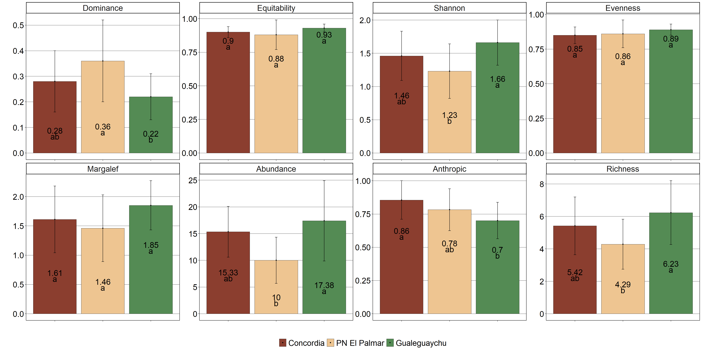
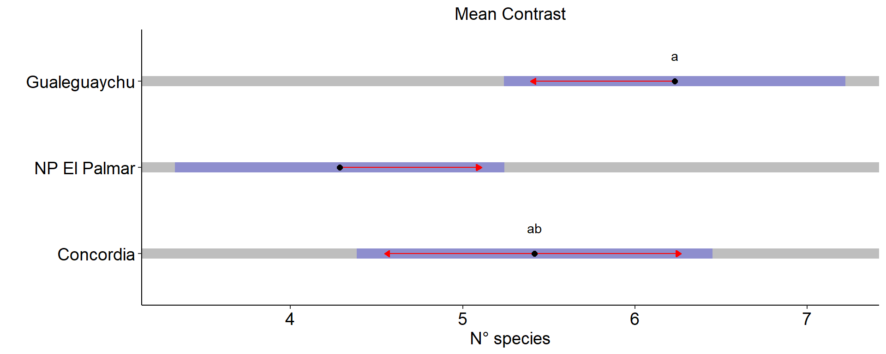
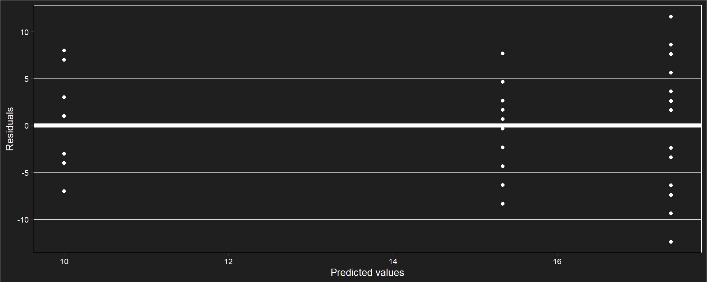
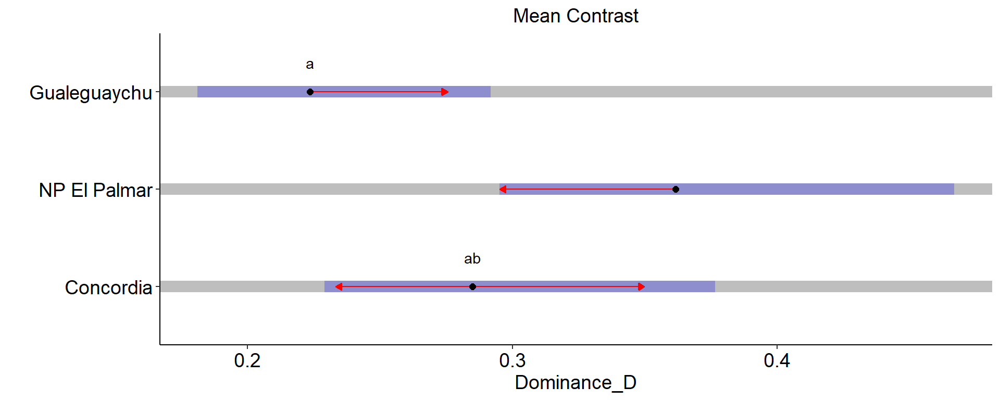
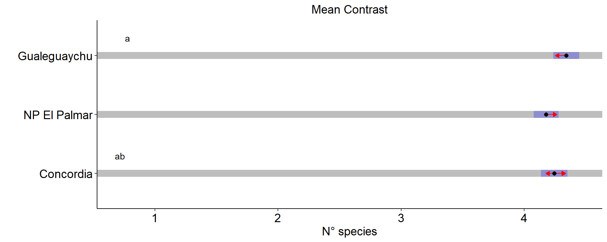
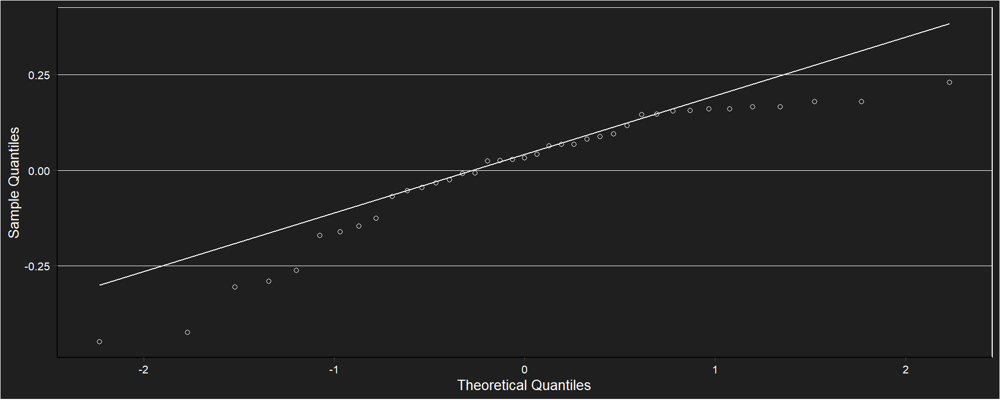
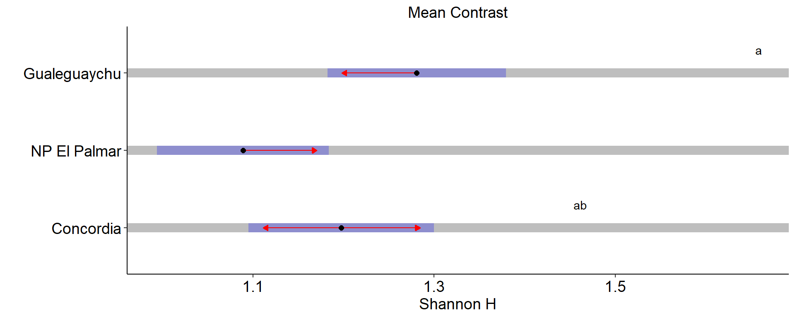
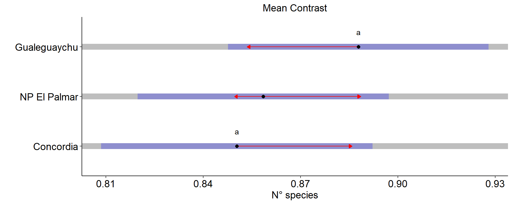
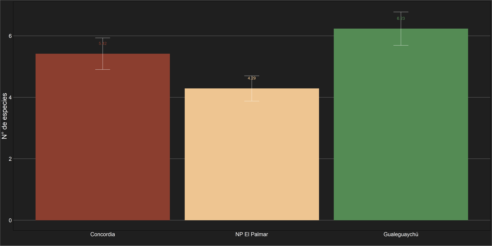
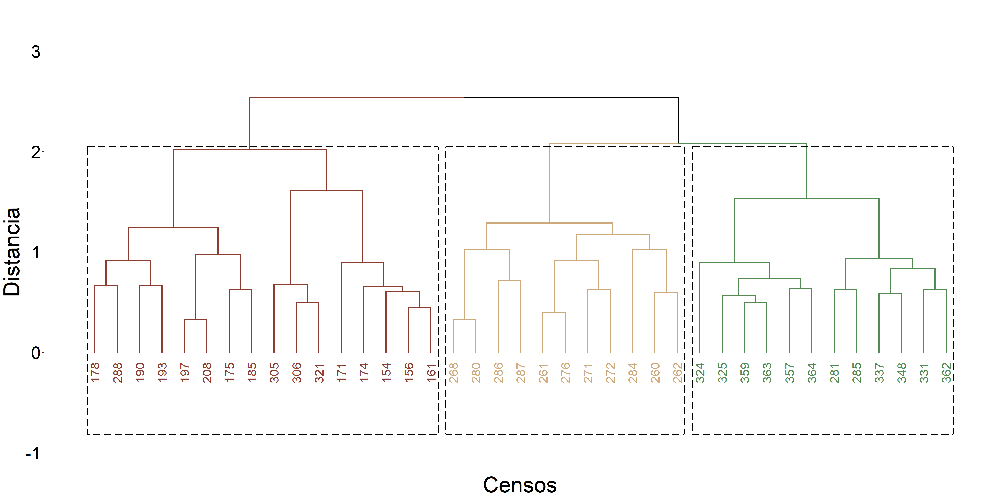

Companion species
Introducción
Las superficies de bosques nativos han disminuido en las últimas décadas en la Argentina por el avance de la frontera agrícola y ganadera (Viglizzo y Jobbágy, 2010). Sin embargo, aún se conservan áreas con menor efecto antrópico como ocurre en la selva en galería del río Uruguay en la provincia de Entre Ríos. Estas áreas son fuentes de biodiversidad por el fenómeno de intrusión de vegetación por el cual especies de la Provincia Paranaense se desplazan hacia el sur por los ríos Uruguay y Paraná y se adaptan al microclima ribereño que toma un aspecto selvático (Bertucci et al., 2008). Esta adaptación da origen a una gran variabilidad fenotípica con potenciales servicios ecosistémicos para la humanidad. Este es el caso de Hexachlamys edulis (O. Berg) Kausel & D. Legrand, “ubajay”, especie que ha sido observada en áreas cercanas a cursos de agua y selvas o bosques en galería de los ríos Paraná y Uruguay (Proença, 2006). Esta especie se destaca por su fruto comestible y su potencial como recurso forestal no maderable de importancia para la salud y la nutrición (Vignale y Bisio, 2005). En el marco de un estudio de variabilidad fenotípica del ubajay se genera la necesidad de conocer el estado de conservación entre los sitios de muestreo. Para esto, la riqueza y abundancia de las diversas especies registradas es un importante indicador de la biodiversidad y del avance antrópico junto con la cuantificación de especies nativas y exóticas. No obstante, cabe aclarar que se entiende por riqueza a la cantidad de especies diferentes por superficie o punto de muestreo, mientras que la abundancia es el número de individuos por superficie o punto de muestreo (Rodríguez et al., 2005).
Objetivos
El presente trabajo tuvo como objetivos:
Evaluar los cambios en la riqueza y abundancia de especies vegetales acompañantes de árboles de ubajay en tres poblaciones de la selva en galería del río Uruguay en la provincia de Entre Ríos.
Explorar la relación entre nativas y exóticas.
Conocer las principales familias presentes, tanto exóticas como nativas.
Detectar alguna posible asociación entre el ubajay y otras especies.
Relacionar las poblaciones y las accesiones según su similitud en la vegetación acompañante.
Materiales y métodos
Se seleccionaron 40 ejemplares de ubajay crecidos en forma espontánea en 3 poblaciones de la selva en galería del río Uruguay, dentro de la provincia de Entre Ríos. La distribución de estos árboles seleccionados fue: 12 ejemplares en Concordia, 15 ejemplares en el Parque Nacional El Palmar y 13 en la reserva privada El Potrero de San Lorenzo en Gualeguaychú. Para el registro y recuento de las especies acompañantes se determinó un radio de 3 metros desde el fuste de cada árbol seleccionado (28,3 m² área mínima de cada censo), donde se clasificó taxonómicamente y se registró el número de todas las especies perennes presentes. Como análisis preliminares se midieron la riqueza absoluta (R) que es el número de especies en cada censo y la abundancia absoluta (A) que representa el número de individuos en cada censo. La riqueza de familias (Rf) es la cantidad de familias presentes en cada censo y se diferenciaron entre nativas y exóticas para la comparación entre los diversos sitios de estudio. Se generó un indicador antrópico (I) que señala la relación de especies nativas y exóticas, donde 1 implica una vegetación completamente nativa y 0 completamente exótica.
I = (n° nativas)/(n° nativas + n° exóticas)
Los resultados se analizaron mediante ANOVA y posteriormente las medias se separaron por test de Tukey (p<0,05).
Por otra parte, para la comparación de la heterogeneidad de la vegetación acompañante se utilizaron métodos complementarios de clasificación y ordenamiento a partir de una tabla de abundancia y la construcción de una matríz de similitudes por el método de Jaccard.
Para la conformación de la matriz de datos se eliminó a aquellas especies que sólo aparecieron en 1 censo, también fue eliminado el censo 274 que sólo contó con la presencia de 1 especie.
Resultados
Se catalogó la flora total de las áreas de estudio, se encontraron 39 familias con 70 especies de riqueza y 613 ejemplares de abundancia.
Argentinian forest

Indicadores de biodiversidad

ANOVA BIO INDEX
Richness

##
## Shapiro-Wilk normality test
##
## data: e
## W = 0.9535334, p-value = 0.108117## Analysis of Variance Table
##
## Response: Richness
## Df Sum Sq Mean Sq F value Pr(>F)
## site 2 25.81593 12.907967 4.14597 0.023966 *
## Residuals 36 112.08150 3.113375
## ---
## Signif. codes: 0 '***' 0.001 '**' 0.01 '*' 0.05 '.' 0.1 ' ' 1Tukey test
## $emmeans
## site emmean SE df lower.CL upper.CL
## Concordia 5.41666667 0.509360306 36 4.38363609 6.44969725
## NP El Palmar 4.28571429 0.471576009 36 3.32931381 5.24211476
## Gualeguaychu 6.23076923 0.489377552 36 5.23826555 7.22327291
##
## Confidence level used: 0.95
##
## $contrasts
## contrast estimate SE df t.ratio p.value
## Concordia - NP El Palmar 1.130952381 0.694141090 36 1.629 0.2466
## Concordia - Gualeguaychu -0.814102564 0.706355654 36 -1.153 0.4888
## NP El Palmar - Gualeguaychu -1.945054945 0.679613361 36 -2.862 0.0187
##
## P value adjustment: tukey method for comparing a family of 3 estimatesAbundance

##
## Shapiro-Wilk normality test
##
## data: e
## W = 0.9890325, p-value = 0.963843## Analysis of Variance Table
##
## Response: Abundance
## Df Sum Sq Mean Sq F value Pr(>F)
## site 2 393.8462 196.92308 6.09175 0.0052635 **
## Residuals 36 1163.7436 32.32621
## ---
## Signif. codes: 0 '***' 0.001 '**' 0.01 '*' 0.05 '.' 0.1 ' ' 1Tukey test
## $emmeans
## site emmean SE df lower.CL upper.CL
## Concordia 15.3333333 1.64129550 36 12.0046318 18.6620349
## NP El Palmar 10.0000000 1.51954436 36 6.9182212 13.0817788
## Gualeguaychu 17.3846154 1.57690570 36 14.1865024 20.5827284
##
## Confidence level used: 0.95
##
## $contrasts
## contrast estimate SE df t.ratio p.value
## Concordia - NP El Palmar 5.33333333 2.23670873 36 2.384 0.0571
## Concordia - Gualeguaychu -2.05128205 2.27606733 36 -0.901 0.6430
## NP El Palmar - Gualeguaychu -7.38461538 2.18989650 36 -3.372 0.0050
##
## P value adjustment: tukey method for comparing a family of 3 estimates
Dominance_D
## df AIC
## mbi_Dominance_D 4 -60.8089128
## m1 4 -45.6183206
## m2 4 -30.9233836
##
## Shapiro-Wilk normality test
##
## data: e
## W = 0.9248564, p-value = 0.0123331## Analysis of Deviance Table (Type II tests)
##
## Response: Dominance_D
## LR Chisq Df Pr(>Chisq)
## site 8.934784 2 0.011477 *
## ---
## Signif. codes: 0 '***' 0.001 '**' 0.01 '*' 0.05 '.' 0.1 ' ' 1Tukey test
## $emmeans
## site response SE df lower.CL upper.CL
## Concordia 0.284933333 0.0342232869 36 0.229120870 0.376693632
## NP El Palmar 0.361635714 0.0402139090 36 0.295086567 0.466942533
## Gualeguaychu 0.223523077 0.0257940661 36 0.181131505 0.291819884
##
## Confidence level used: 0.95
## Intervals are back-transformed from the inverse scale
##
## $contrasts
## contrast estimate SE df t.ratio p.value
## Concordia - NP El Palmar 0.744379274 0.521770346 36 1.427 0.3382
## Concordia - Gualeguaychu -0.964218111 0.666502451 36 -1.447 0.3283
## NP El Palmar - Gualeguaychu -1.708597386 0.600902442 36 -2.843 0.0195
##
## Note: contrasts are still on the inverse scale
## P value adjustment: tukey method for comparing a family of 3 estimates
Simpson_1D

## df AIC
## mbi_Simpson_1D 4 -237.83822465
## m1 4 1.69639104
## m2 4 -30.92338360
##
## Shapiro-Wilk normality test
##
## data: e
## W = 0.8458366, p-value = 0.000104094## Analysis of Deviance Table (Type II tests)
##
## Response: 1/log(SD100)
## LR Chisq Df Pr(>Chisq)
## site 5.232317 2 0.073083 .
## ---
## Signif. codes: 0 '***' 0.001 '**' 0.01 '*' 0.05 '.' 0.1 ' ' 1Tukey test
## $emmeans
## site emmean SE df lower.CL upper.CL
## Concordia 4.24499121 0.0528972633 35 4.13760406 4.35237836
## NP El Palmar 4.17836513 0.0500244443 35 4.07681011 4.27992015
## Gualeguaychu 4.34260970 0.0519910125 35 4.23706233 4.44815707
##
## Results are given on the inverse (not the response) scale.
## Confidence level used: 0.95
##
## $contrasts
## contrast estimate SE df t.ratio p.value
## Concordia - NP El Palmar 0.0666260776 0.0728049826 35 0.915 0.6345
## Concordia - Gualeguaychu -0.0976184906 0.0741699795 35 -1.316 0.3959
## NP El Palmar - Gualeguaychu -0.1642445681 0.0721492232 35 -2.276 0.0725
##
## Note: contrasts are still on the inverse scale
## Results are given on the log (not the response) scale.
## P value adjustment: tukey method for comparing a family of 3 estimatesShannon_H

##
## Shapiro-Wilk normality test
##
## data: e
## W = 0.8978884, p-value = 0.00192033## Analysis of Variance Table
##
## Response: sqrt(Shannon_H)
## Df Sum Sq Mean Sq F value Pr(>F)
## site 2 0.2506375 0.12531874 4.09653 0.02495 *
## Residuals 36 1.1012916 0.03059143
## ---
## Signif. codes: 0 '***' 0.001 '**' 0.01 '*' 0.05 '.' 0.1 ' ' 1Tukey test
## $emmeans
## site emmean SE df lower.CL upper.CL
## Concordia 1.19763421 0.0504904551 36 1.095234823 1.30003360
## NP El Palmar 1.08887999 0.0467450782 36 0.994076579 1.18368341
## Gualeguaychu 1.28085431 0.0485096602 36 1.182472162 1.37923646
##
## Results are given on the sqrt (not the response) scale.
## Confidence level used: 0.95
##
## $contrasts
## contrast estimate SE df t.ratio p.value
## Concordia - NP El Palmar 0.1087542204 0.0688068920 36 1.581 0.2669
## Concordia - Gualeguaychu -0.0832201003 0.0700176634 36 -1.189 0.4675
## NP El Palmar - Gualeguaychu -0.1919743206 0.0673668276 36 -2.850 0.0192
##
## Note: contrasts are still on the sqrt scale
## P value adjustment: tukey method for comparing a family of 3 estimatesEvenness_eHS

##
## Shapiro-Wilk normality test
##
## data: e
## W = 0.9775206, p-value = 0.613773## Analysis of Variance Table
##
## Response: Evenness_eHS
## Df Sum Sq Mean Sq F value Pr(>F)
## site 2 0.00989197 0.004945984 0.9706 0.38855
## Residuals 36 0.18344803 0.005095779Tukey test
## $emmeans
## site emmean SE df lower.CL upper.CL
## Concordia 0.850366667 0.0206069944 36 0.808573745 0.892159588
## NP El Palmar 0.858542857 0.0190783696 36 0.819850130 0.897235584
## Gualeguaychu 0.887807692 0.0197985598 36 0.847654352 0.927961033
##
## Confidence level used: 0.95
##
## $contrasts
## contrast estimate SE df t.ratio p.value
## Concordia - NP El Palmar -0.0081761905 0.0280825997 36 -0.291 0.9544
## Concordia - Gualeguaychu -0.0374410256 0.0285767596 36 -1.310 0.3988
## NP El Palmar - Gualeguaychu -0.0292648352 0.0274948569 36 -1.064 0.5420
##
## P value adjustment: tukey method for comparing a family of 3 estimatesMargalef

##
## Shapiro-Wilk normality test
##
## data: e
## W = 0.9612506, p-value = 0.196281## Analysis of Variance Table
##
## Response: Margalef
## Df Sum Sq Mean Sq F value Pr(>F)
## site 2 1.024532 0.5122660 1.85867 0.17053
## Residuals 36 9.921894 0.2756082Tukey test
## $emmeans
## site emmean SE df lower.CL upper.CL
## Concordia 1.61331667 0.151549815 36 1.30595939 1.92067394
## NP El Palmar 1.45600000 0.140307865 36 1.17144246 1.74055754
## Gualeguaychu 1.84446154 0.145604353 36 1.54916222 2.13976085
##
## Confidence level used: 0.95
##
## $contrasts
## contrast estimate SE df t.ratio p.value
## Concordia - NP El Palmar 0.157316667 0.206527585 36 0.762 0.7286
## Concordia - Gualeguaychu -0.231144872 0.210161781 36 -1.100 0.5204
## NP El Palmar - Gualeguaychu -0.388461538 0.202205155 36 -1.921 0.1474
##
## P value adjustment: tukey method for comparing a family of 3 estimates
Equitatibilidad

##
## Shapiro-Wilk normality test
##
## data: e
## W = 0.9679584, p-value = 0.339773## Denom. DF: 35
## numDF F-value p-value
## (Intercept) 1 20790.84936 <.0001
## site 2 3.00534 0.0624Tukey test
## $emmeans
## site emmean SE df lower.CL upper.CL
## Concordia 0.897291667 0.01210326390 11 0.870653129 0.923930204
## NP El Palmar 0.898876923 0.02044785361 12 0.854324734 0.943429112
## Gualeguaychu 0.929953846 0.00804311864 12 0.912429271 0.947478422
##
## Degrees-of-freedom method: satterthwaite
## Confidence level used: 0.95
##
## $contrasts
## contrast estimate SE df t.ratio p.value
## Concordia - NP El Palmar -0.0015852564 0.0237613913 19.30 -0.067 0.9975
## Concordia - Gualeguaychu -0.0326621795 0.0145320595 19.40 -2.248 0.0881
## NP El Palmar - Gualeguaychu -0.0310769231 0.0219728577 15.63 -1.414 0.3578
##
## Degrees-of-freedom method: satterthwaite
## P value adjustment: tukey method for comparing a family of 3 estimatesanthropic_Ia
##
## Shapiro-Wilk normality test
##
## data: e
## W = 0.9608411, p-value = 0.190224## Analysis of Variance Table
##
## Response: anthropic_Ia
## Df Sum Sq Mean Sq F value Pr(>F)
## site 2 0.1493748 0.07468741 3.46242 0.042139 *
## Residuals 36 0.7765513 0.02157087
## ---
## Signif. codes: 0 '***' 0.001 '**' 0.01 '*' 0.05 '.' 0.1 ' ' 1Tukey test
## $emmeans
## site emmean SE df lower.CL upper.CL
## Concordia 0.855125661 0.0423977872 36 0.769138964 0.941112359
## NP El Palmar 0.782369615 0.0392527236 36 0.702761401 0.861977828
## Gualeguaychu 0.700671551 0.0407344763 36 0.618058204 0.783284898
##
## Confidence level used: 0.95
##
## $contrasts
## contrast estimate SE df t.ratio p.value
## Concordia - NP El Palmar 0.0727560469 0.0577784446 36 1.259 0.4270
## Concordia - Gualeguaychu 0.1544541107 0.0587951522 36 2.627 0.0329
## NP El Palmar - Gualeguaychu 0.0816980638 0.0565691954 36 1.444 0.3295
##
## P value adjustment: tukey method for comparing a family of 3 estimatesformula
\[ H = -\sum_{i=1}^{n} p_i \log_{2}(p_i) \]
Número de especies por sitio
 Las barras representan el error estándar.
Las barras representan el error estándar.
Exponente del índice de Shannon por sitio
 Las barras representan el error estándar.
Clasificación

Agrupamiento jerárquico de los censos a través de la distancia de Bray y método de Ward.
Ordenamiento
Ordenamiento multidimensional (PCoA) de los censos a partir de la matriz de distancias de Jaccard. Las elipses indican un intérvalo de confianza del 95% para cada población.
¿Hay una considerable diferencia entre la composición florística de Concordia y el Palmar? -> Permanova
Bibliografía
BERTUCCI, A.; HARETCHE, F.; OLIVARO, C.; VÁZQUEZ, A. 2008. Prospección química del bosque en galería de río Uruguay. Revista Brasileira de Farmacognosia 18(1):21-25
PROENÇA, C.E.B. 2006. Proposal to Conserve the Name Myrcianthes edulis against Psidium amygdalinum (Myrtaceae). Taxon 55(2):536-537
RODRÍGUEZ, N.; RUÍZ, R.; ARMENTERAS PASCUAL, D.; MENDOZA CIFUENTES, H.; UMAÑA, A.M.; ARANGO, N.; BAPTISTE, E.M.P. 2005. Corredor nororiental de robles: indicadores de estado de la biodiversidad, factores antrópicos asociados y áreas prioritarias de conservación. Instituto de Investigación de Recursos Biológicos Alexander von Humboldt. Serie: Indicadores de Seguimiento y Evaluación de la Política de Biodiversidad. 88 p.
VIGLIZZO, E.F.; JOBBÁGY, E. 2010. Expansión de la Frontera Agropecuaria en Argentina y su Impacto Ecológico-Ambiental. Ediciones INTA. P: 9-16
VIGNALE, B.; BISIO, L. 2005. Selección de frutales nativos en Uruguay. Agrociencia 9(1-2):41- 51
Materiales y métodos
Se seleccionaron 40 ejemplares de ubajay crecidos en forma espontánea en 3 poblaciones de la selva en galería del río Uruguay, dentro de la provincia de Entre Ríos.
Las poblaciones bajo estudio son:
- Concordia
- El Palmar
- Gualeguaychú
Las mismas son cosideradas como niveles de una variable categórica de clasificación a priori.
Se propone responder al objetivo mediante la comparación de la heterogeneidad de la vegetación acompañante a partir de métodos complementarios de clasificación (cluster), MRPP, ordenamiento(EMD o PCoA) y un análisis discriminante.
Clasificación y ordenamiento
Clasificación
Se construye una matríz de similitudes por el método de Bray-Curtis teniendo en cuenta que otorga el doble de peso a las coincidencias y es ampliamente utilizado en estudios ecológicos.
Agrupamiento jerárquico de los censos a través de la distancia de Bray-Curtis y método de Ward.
Los agrupamientos en tres grupos principales incluyen mayoritariamente a censos de las mismas poblaciones. En rojo se observan
MRPP
##
## Call:
## mrpp(dat = datosm, grouping = grp, permutations = 999, distance = "mahalanobis", weight.type = 1)
##
## Dissimilarity index: mahalanobis
## Weights for groups: n
##
## Class means and counts:
##
## 1 2 3
## delta 8.7178 8.7178 8.7178
## n 12 14 13
##
## Chance corrected within-group agreement A: 0
## Based on observed delta 8.718 and expected delta 8.718
##
## Significance of delta: 1
## Permutation: free
## Number of permutations: 999El análisis MRPP de los cambios en la composición de especies mostró diferencias significativas entre las poblaciones bajo muestreo (delta = 0.001).
Ordenamiento
Escalamiento multi dimensional (EMD) o Análisis de coordenadas principales (PCoA)
La elección de este método se justifica por la siguiente cita textual de Palacio et al,. (2020): “En Biología es común el uso de datos cualitativos o con exceso de dobles ceros (presencia-ausencia, abundancia). En tales casos, la distancia euclideana entre las UE no es apropiada conceptualmente, por lo que el PCA no es adecuado (ver en este capítulo Efecto arco). Tanto el PCA como el CA imponen la distancia que se conserva entre las UE: distancia euclideana y chi-cuadrado, respectivamente. Si el investigador está interesado en ordenar las UE de acuerdo a otra medida de similitud, entonces puede utilizar el análisis de coordenadas principales (PCoA).”
Realizado a partir de la matriz de similitudes por Bray-Curtis.
## [1] 14.8840163Se observa un ordenamiento muy marcado de las poblaciones en concordancia con los resultados anteriores. Los dos ejes principales explican un 27.19% de la variación total de los datos.
Base de datos
Análisis discriminante
Análisis discriminante
| Grupo | CONCORDIA | GUALEGUAYCHU | PALMAR | Total | Error(%) |
|---|---|---|---|---|---|
| CONCORDIA | 12 | 0 | 0 | 12 | 0,00 |
| GUALEGUAYCHU | 0 | 13 | 0 | 13 | 0,00 |
| PALMAR | 0 | 0 | 14 | 14 | 0,00 |
| Total | 12 | 13 | 14 | 39 | 0,00 |
El análisis discriminante muestra las separaciones maximizadas y la tasa de error calculada total es de 0%. De todas formas, si se quisiera usar, por ejemplo a estas especies vegetales para inferir a que población pertenece un censo no sería recomendable ya que posiblemente no se cumplen los supuestos de matrices similares de varianza covarianza dentro de grupos.
Finalmente, todos los resultados llevan a la conclusión de que las poblaciones de ubajay en cada sitio se encuentran en distintas comunidades vegetales con respecto a las especies leñosas y semileñosas acompañantes.
Observado vs esperado
## [1] 0.314285714## [1] 0.342857143## [1] 0.333333333## [1] 0.314285714## [1] 75## [1] 71## [1] 60